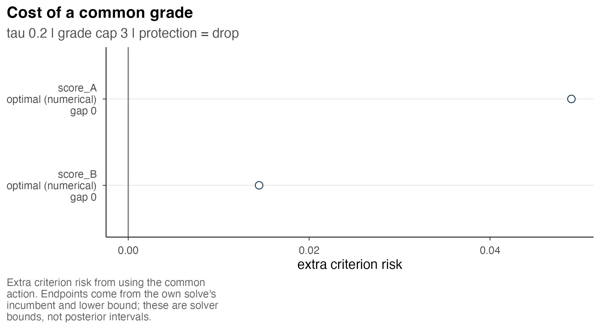
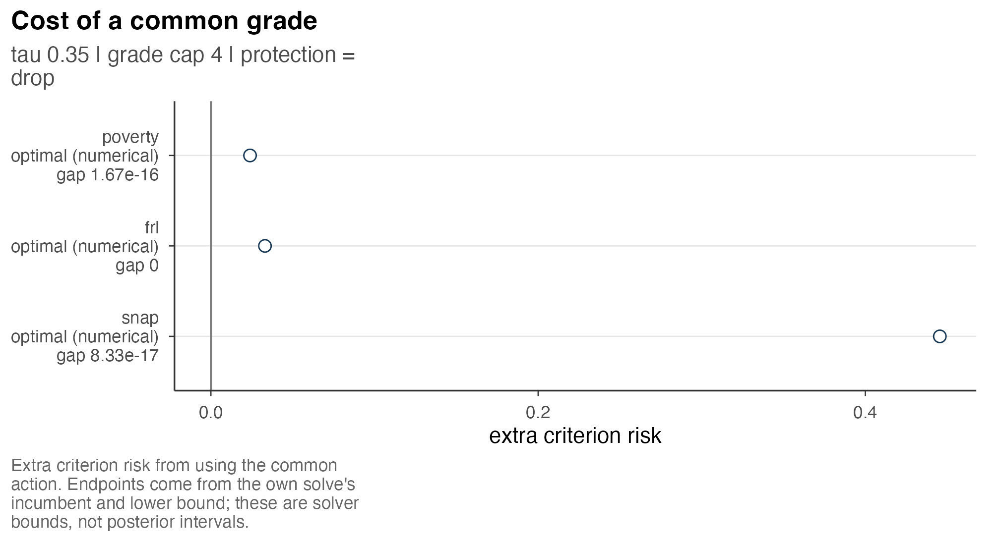
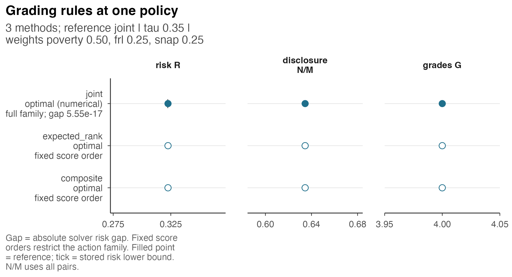
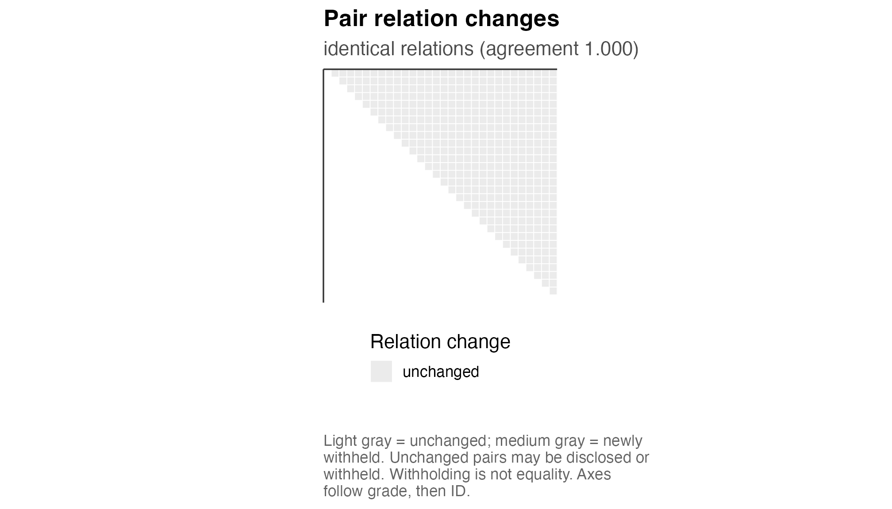

Combining several criteria in one common grading
Source:vignettes/m2-several-criteria.Rmd
m2-several-criteria.RmdWith one criterion, a grading trades expected wrong-direction errors against the cost of leaving pairs unordered. With two or more criteria—such as school absence and suspension, race and gender contact gaps, or county income and incarceration—you also have to decide what a directional error means. Averaging wrong-direction errors across criteria and ordering a single composite index are different decision problems that can favor opposite rankings even when all target values are known.
This article extends the single-criterion loss from Posterior ranking, integer grades, and
reporting loss to multiple criteria, contrasts weighted directional
loss with a scalar composite target, shows what posterior dependence
each objective needs, and examines the criterion-specific cost of
sharing one common grading. Executed chunks use direct arithmetic,
stored postrank_example() objects, and two fixed-order
dynamic-programming cut examples (postrank_cuts()), so
rendering needs no external LP or MIP solver.
Criterion-weighted loss
Orient every criterion
before grading so that larger values of
receive higher priority. A common grading assigns one integer grade
to each entity
:
Grade 1 has the highest priority,
marks pairs reported with
ahead of
,
is the number of unordered pairs, and
is the number of ordered (disclosed) pairs. Entities in the
same grade are left unordered.
On criterion , let be the posterior probability that reporting ahead of is wrong, and let
be the posterior expected number of wrong-direction pairs on criterion . All examples in this article assume zero posterior probability of exact ties within each criterion; see Exact ties in the posterior versus withheld comparisons when exact equality has positive probability.
Choose criterion weights
.
In postrank() and postrank_settings(), weights
follow three rules:
- Every weight must be finite and nonnegative
().
A criterion can receive weight
0so its error profile is tracked (or constrained by an error budgetq) without entering the weighted objective. - Weights must sum to
1within1e-12.postranknever rescales weights automatically; weights that do not sum to1stop with an error. - With two or more criteria,
weights(orsettings) must be supplied; only for a single criterion doespostrank()fill in weight1whenweightsis omitted (postrank_settings()always requiresweights). Named weights match criterion IDs, while unnamed weights inpostrank()andpostrank_settings()match the input’s criterion order (passingweightsdirectly topostrank_problem()orpostrank_evaluate()requires criterion names).
Given weights and withholding cost , each criterion has its own loss , and the criterion-weighted posterior expected loss is
Leaving a pair unordered costs once, regardless of : the weights average the directional-error probabilities across criteria rather than multiplying by . Setting and recovers the single-criterion loss, and giving every entity Grade 1 still has loss .
By linearity of expectation, holds whether criteria or entity pairs are dependent or independent in the posterior. It does not assume that errors are independent across criteria, nor does it mean that an ordered pair is simultaneously right on every criterion. See Lee (2026), Chapter 11, Weighted directional risk from a supplied selection law.
Criterion weights express how you trade wrong-direction errors on one
criterion against wrong-direction errors on another; they are not
estimated from the posterior. Giving two criteria equal weight
(0.5 and 0.5) does not force their expected
error rates E_over_N to be equal. Bounding individual
criterion errors or minimizing the worst criterion’s loss requires
q or objective = "minimax", discussed below
and in Computing grades, choosing
settings, and reading solver bounds.
Why weighted loss differs from a composite target
A linear composite defines a single combined target per entity, such as , and evaluates wrong-direction probability as . That probability depends on cardinal differences across criteria, whereas averages criterion-by-criterion ordering errors. Setting does not make the two objectives agree.
Even with zero posterior uncertainty, the two goals can rank a pair
in opposite orders. Suppose entity A has known targets
and entity B has known targets
:
- Under criterion-weighted loss with weights
and
,
reporting
Aahead ofBis right on criterion 1 and wrong on criterion 2 (loss ), reportingBahead ofAcosts , and leaving the pair unordered costs . The best action reportsAahead ofB. - Under an equally weighted composite
,
,
so the composite orders
Bahead ofA. (Even with composite weights , , whereas changingAto gives while keeping the criterion-weighted error ofAahead ofBequal to .)
The disagreement comes from the definition of the target, not from estimation noise; see Lee (2026), Chapter 12, Composite and criterion-specific reporting targets. The two losses agree in general only under strong alignment—for example, when all positive-weight criteria share the exact same strict ordering across entities in almost every posterior draw, which is much stronger than positive correlation across criteria.
Posterior information required across criteria
To evaluate
,
postrank needs only the within-criterion pairwise
probabilities
.
Once each
is computed from the joint distribution of entities within criterion
,
dependence between criteria does not change
.
(Within each criterion, dependence between entities still
matters whenever marginal intervals are converted to pairwise
probabilities.)
Ordering a composite
—or
computing the probability that A beats B on
both criteria at once—does depend on how the criteria move
together within each entity. To see this directly, fix entity
B at
and compare two two-state distributions for entity A in
which each row has probability 1/2:
library(postrank)
together <- rbind(c(2, 2), c(-1, -1))
opposite <- rbind(c(2, -1), c(-1, 2))
w <- c(0.5, 0.5)
law_summary <- function(A) {
crit_err <- colMeans(A <= 0)
c(crit_1 = crit_err[1], crit_2 = crit_err[2],
weighted_error = sum(w * crit_err),
composite_error = mean(as.vector(A %*% w) <= 0),
correct_on_both = mean(rowSums(A > 0) == 2L))
}
rbind(together = law_summary(together), opposite = law_summary(opposite))
#> crit_1 crit_2 weighted_error composite_error correct_on_both
#> together 0.5 0.5 0.5 0.5 0.5
#> opposite 0.5 0.5 0.5 0.0 0.0Both distributions have identical marginal error probabilities
(0.5 on criterion 1 and 0.5 on criterion 2),
so reporting A ahead of B has
criterion-weighted error 0.5 under both laws; at
,
leaving the pair unordered minimizes
under both laws. Under opposite, however,
in every state, so reporting A ahead of B has
composite error 0 (while simultaneous correctness on both
criteria drops from 0.5 to 0).
Criterion-by-criterion probability tables cannot distinguish
together from opposite; see Lee (2026),
Chapter 11, Exact
comparison of additive, composite, and joint-event information.
If your goal is to grade entities on a composite
,
compute
on each joint posterior draw
before calling postrank_draws(), so cross-criterion
dependence is preserved. Combine values only when the draw IDs identify
the same joint state, whether the states were sampled independently or
by MCMC. Row numbers from separate fits do not establish this
correspondence. postrank_composite() computes a
deterministic score vector from posterior means using user-supplied
centers and scales—useful for building a
fixed-order baseline, not a posterior distribution for
.
See Posterior representations and
pairwise comparison probabilities.
Scale changes affect the two goals differently
Applying the same strictly increasing transformation to every entity
on criterion
preserves
in every posterior state. When the posterior is transformed directly and
weights, tau, and the allowed grade family are
held fixed,
,
,
and the entire set of optimal gradings are unchanged.
A linear composite is not invariant to nonlinear monotone transformations (or to rescaling one criterion while holding fixed). Likewise, refitting a statistical model after transforming an outcome can change the posterior itself, and recomputing posterior means on a transformed scale can change a mean-based baseline order; see Lee (2026), Chapter 12, Ordinal invariance and qualified dominance statements.
Criterion-specific cost of a common grading and minimax
The six fictional sites from Getting started: grading with one or two criteria illustrate how one common grading distributes expected errors across criteria. We load the stored single-criterion, two-criterion, and commonality results:
one <- postrank_example("tutorial_one")
two <- postrank_example("tutorial_two")
commonality <- postrank_example("tutorial_commonality")
get_profile(two)[, c("criterion", "weight", "E", "E_over_N", "risk")]
#> criterion weight E E_over_N risk
#> 1 score_A 0.5 0.1596996 0.01774440 0.09064664
#> 2 score_B 0.5 0.2405960 0.02673289 0.09603973With equal weights (0.5 and 0.5),
tau = 0.2, and G_max = 3, the common grading
orders N = 9 of the 15 site pairs. Its
expected wrong-direction rate among ordered pairs
(E_over_N) is 0.0177 (1.77%) on
score_A and 0.0267 (2.67%) on
score_B: equal weights in the objective do not force equal
criterion error rates.
Writing each criterion’s loss as gives . Relative to the best grading chosen for criterion alone over the allowed family , sharing the common grading costs criterion an extra loss of
Whenever
,
.
postrank_commonality_cost() solves each criterion’s own
problem at the same tau, G_max, and
exact_G. If the common problem includes per-criterion error
budgets q, protection = "drop" (the default)
solves each own-criterion problem without q, while
protection = "keep" retains all q error-budget
constraints from the common problem (even on criteria whose
single-criterion weight is 0, so the common grading remains
feasible in every single-criterion solve). Computing
postrank_commonality_cost() from scratch requires an
optimization solver—either the free highs package
(install.packages("highs") with
backend = "highs" or
options(postrank.backend = "highs")) or a licensed Gurobi
installation (the default)—so the solver call below is shown without
running during vignette builds:
commonality <- postrank_commonality_cost(
two, backend = "highs",
control = postrank_control(time_limit = 60, threads = 1, seed = 1304)
)
commonality[["table"]][, c("criterion_id", "common_grade_risk",
"own_best_risk", "cost_lower", "cost_upper")]
#> criterion_id common_grade_risk own_best_risk cost_lower cost_upper
#> 1 score_A 0.09064664 0.04165164 0.04899500 0.04899500
#> 2 score_B 0.09603973 0.08157121 0.01446853 0.01446853
postrank_plot_commonality(commonality)
Open full-size figureExtra loss per criterion from sharing one common grading across the six tutorial sites, with solver lower and upper bounds on each difference.
Sharing the common grading adds 0.0490 loss units on
score_A (0.0906 vs. 0.0417 alone)
and 0.0145 on score_B (0.0960
vs. 0.0816 alone). Both differences combine wrong-direction
errors and withheld pairs under the same tau = 0.2. If an
own-criterion solve returns checked loss
(the best grading found) and solver lower bound
(a loss no grading in
can beat), cost_lower is
and cost_upper is
;
here both own-criterion solves are optimal, so the two endpoints
coincide. With a single criterion (K = 1), the common and
own-criterion problems are identical.
On the larger 30-site, three-criterion synthetic example
(pr_example_draws, criteria poverty,
frl, and snap with weights 0.50,
0.25, and 0.25 and G_max = 4),
snap conflicts with the ordering of the other two criteria
and absorbs the largest extra loss under the shared four-grade report at
tau = 0.35:
a35 <- postrank_example("analysis_30x3_tau35")
cc35 <- postrank_example("commonality_30x3_tau35")
cc35[["table"]][, c("criterion_id", "common_grade_risk", "own_best_risk",
"own_lower_bound", "cost_lower", "cost_upper")]
#> criterion_id common_grade_risk own_best_risk own_lower_bound cost_lower
#> 1 poverty 0.2142040 0.1902943 0.1902943 0.02390977
#> 2 frl 0.2368230 0.2037885 0.2037885 0.03303448
#> 3 snap 0.6250609 0.1795425 0.1795425 0.44551839
#> cost_upper
#> 1 0.02390977
#> 2 0.03303448
#> 3 0.44551839
postrank_plot_commonality(cc35)
Open full-size figureCriterion-specific extra loss from sharing one common four-grade report across 30 synthetic sites on poverty, frl, and snap at tau = 0.35.
That table records the consequences of the chosen weights without
deciding whether those weights are substantively right for an
application. Lowering tau to 0.25 on the same
posterior (analysis_30x3 and commonality_30x3)
makes leaving pairs unordered cheaper than resolving cross-criterion
conflict, so the common grading withholds every pair (1
grade, N = 0—a valid one-grade decision rather than a
failed solver run, and not comparable by raw loss value to
tau = 0.35 because changing tau changes the
loss), even though each criterion optimized on its own would still order
pairs:
a25 <- postrank_example("analysis_30x3")
cc25 <- postrank_example("commonality_30x3")
c(common_grades = length(unique(get_grades(a25))),
common_ordered_pairs = a25[["evaluation"]][["N"]])
#> common_grades common_ordered_pairs
#> 1 0
cc25[["table"]][, c("criterion_id", "common_grade_risk", "own_best_risk",
"own_G", "own_disclosures")]
#> criterion_id common_grade_risk own_best_risk own_G own_disclosures
#> 1 poverty 0.25 0.1604563 4 303
#> 2 frl 0.25 0.1750977 4 303
#> 3 snap 0.25 0.1477747 4 295When you want to protect the worst-performing criterion rather than
minimize a weighted average, set objective = "minimax" in
postrank() or postrank_settings(). Minimax
minimizes
over the criterion subset minimax_criteria (all criteria
by default)—the largest posterior expected criterion
loss, not the expectation of a draw-by-draw maximum across criteria. By
default (minimax_refine = "weighted"), a second solver pass
then minimizes
among gradings that keep the selected criteria at or below the
first-stage minimax value; see Computing grades, choosing settings, and
reading solver bounds for an example using
postrank_example("toy_minimax").
Fixed score-order cuts and comparing gradings under one loss
A simpler baseline orders entities by a scalar score—such as weighted
posterior expected ranks from postrank_expected_rank() or a
mean index from postrank_composite()—and then partitions
that fixed order into at most G_max contiguous grades using
postrank_cuts(). Even when
postrank_composite() builds the order,
postrank_cuts(..., rule = "optimal") chooses cutpoints by
dynamic programming to minimize the criterion-weighted
loss
along that order rather than evaluating composite-target error
probabilities or arbitrary equal-sized bins:
er <- postrank_expected_rank(a35[["pairwise"]], a35[["settings"]][["weights"]])
head(sort(er))
#> site003 site010 site029 site028 site027 site019
#> 9.239438 9.371562 10.953312 11.076812 11.934250 12.872750
er_cuts <- postrank_cuts(er, a35[["pairwise"]], a35[["settings"]])
er_cuts
#> <postrank_baseline> 30 entities in 4 grades (sizes 2 / 14 / 12 / 2)
#> Score order: expected rank; optimal cuts.
#> Posterior loss: 0.3226. Disclosed 276 of 435 pairs (63.4%); withheld 159.
#> The cuts minimize loss within this score order. Other orders were not
#> searched.
#> Equal scores stay together. Grade 1 has highest priority.
#> i get_grades(x) returns every grade; postrank_compare() compares methods
#> under one loss.
means <- postrank_posterior_means(pr_example_draws)
comp <- postrank_composite(
means, a35[["settings"]][["weights"]],
scales = c(poverty = 1, frl = 1, snap = 1),
centers = c(poverty = 0, frl = 0, snap = 0)
)
postrank_cuts(comp, a35[["pairwise"]], a35[["settings"]], direction = "descending")
#> <postrank_baseline> 30 entities in 4 grades (sizes 2 / 14 / 12 / 2)
#> Score order: composite; optimal cuts.
#> Posterior loss: 0.3226. Disclosed 276 of 435 pairs (63.4%); withheld 159.
#> The cuts minimize loss within this score order. Other orders were not
#> searched.
#> Equal scores stay together. Grade 1 has highest priority.
#> i get_grades(x) returns every grade; postrank_compare() compares methods
#> under one loss.In postrank_composite(), centers and
scales are user-declared constants rather than
data-estimated standardizations: named vectors match criterion IDs in
any order and must list each criterion once, whereas an unnamed scalar
is recycled across criteria (missing, extra, or duplicate names stop
with an error). With quantile cuts (rule = "quantile",
G_b), entities with identical scores are never split across
grades, and the realized grade count must still satisfy
G_max and exact_G.
Because a baseline searches only contiguous cuts of its fixed score order, its optimality scope is that order alone (with no whole-family LP/MIP lower bound or gap). Every contiguous partition of a score order is also a valid integer grading, so exact unrestricted optimization over achieves a loss no larger than any fixed-order cut rule inside on the same posterior and loss—whether that inequality is strict depends on the dataset, and whether a numerical solver run reached the exact minimum depends on its status and gap. See Lee (2026), Chapter 22, Conditional Bayes dominance and its limits.
postrank_compare() evaluates the joint grading and
fixed-order baselines on one shared posterior and policy:
cmp35 <- postrank_example("comparison_30x3_tau35")
cmp35[["table"]][, c("method", "risk", "N", "G", "status",
"optimality_scope", "risk_absolute_gap", "family_feasible", "feasibility_reason")]
#> method risk N G status
#> 1 joint 0.322573 276 4 optimal
#> 2 expected_rank 0.322573 276 4 optimal
#> 3 composite 0.322573 276 4 optimal
#> optimality_scope
#> 1 full declared family (numerical solve)
#> 2 contiguous partitions of the declared expected rank score order only
#> 3 contiguous partitions of the declared composite score order only
#> risk_absolute_gap family_feasible feasibility_reason
#> 1 5.551115e-17 TRUE <NA>
#> 2 NA TRUE <NA>
#> 3 NA TRUE <NA>
postrank_plot_compare(cmp35)
Open full-size figureLoss, ordered pairs, and occupied grades for the joint common grading and the expected-rank and composite fixed-order baselines on the 30-site example at tau = 0.35.
In cmp35$table, status,
optimality_scope, and reason stay separate
(any row without a checked grading retains its status and reason without
plotting a grade), while family_feasible and
feasibility_reason check G_max,
exact_G, and q within
cmp35$provenance$family_feasibility_tolerance (older saved
comparisons without those columns display "not recorded"
without recomputing). On this 30-site example at
tau = 0.35, all three rules choose the same grading—so
postrank_plot_compare(cmp35, view = "relations") and the
pairwise change map
postrank_plot_relations(a35, y = er_cuts, labels = "none")
show zero changed pair relations—though agreement on one dataset does
not imply general equivalence:
postrank_plot_relations(a35, y = er_cuts, labels = "none")
Open full-size figurePairwise ordering changes between the joint common grading and the expected-rank cut baseline on the 30-site example (all zero differences here).
To compare any externally chosen grading—such as the single-criterion
score_A grades on the six tutorial sites—against
two under the two-criterion loss without running baseline
cut searches, pass named grade vectors to
postrank_compare() with
baselines = character():
comparison <- postrank_compare(
two,
`Score A grades` = get_grades(one),
baselines = character()
)
comparison[["table"]][, c("method", "risk", "N", "G", "status")]
#> method risk N G status
#> 1 joint 0.09334319 9 3 optimal
#> 2 Score A grades 0.13564691 12 3 evaluatedEvaluated on both criteria (weights = c(0.5, 0.5),
tau = 0.2), the score_A-only grading orders
12 pairs and has two-criterion loss 0.1356,
compared with 9 ordered pairs and loss 0.0933
for the common grading two. Both gradings use
3 grades (G_max = 3), and both losses are
evaluated under the exact same two-criterion objective rather than
comparing one’s one-criterion loss directly against
two’s two-criterion loss. Lower loss under one chosen
objective and posterior does not make a grading superior under a
different loss, target definition, or population distribution; see Figures and sensitivity to reporting
settings for systematic sensitivity checks across weights,
tau, and G_max.
References
Lee, JoonHo (2026). Decisions from Noisy Multidimensional
Indicators: Theory, Evidence, and Posterior Grading. Companion book
(citation("postrank"); online Chapters 11, 12, and 22 in
the expanded online edition linked above). See also
?postrank_settings,
?postrank_commonality_cost, and
?postrank_compare.